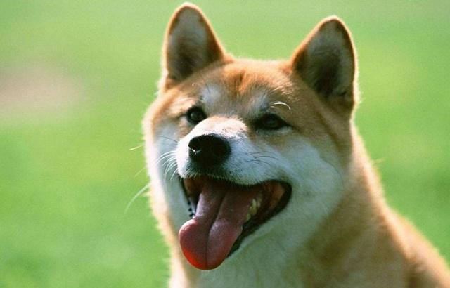
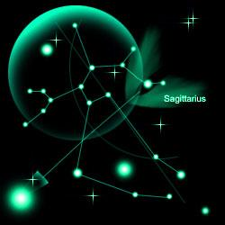

简介
姓名：zhangjingwen
年龄：20岁
星座：射手座
喜欢的运动：爬山，羽毛球，跳绳
喜欢的动物：狗

喜欢的动物
作为人类最好的朋友，狗是人类最早开始驯养的动物之一。它它被驯化的年代大约在一万年前的新石器时期。当时的狗主要是作为打猎、看家护院和玩耍。以色列化石及遗传研究将狗的驯化时期确定为大约1万年前，与农业革命时期相吻合，那时人类从游牧狩猎者转变为在定居点耕作及生活。中国人养狗的历史要稍晚一些，现代考古发现证实，中国人养狗的历史最早可以追溯到新石器时代，公元前7000至8000年以前的河北武安磁山、河南新郑裴李岗以及浙江余姚河姆渡文化遗址中，均出土过狗的遗骸。

星座
射手座(又名人马座)，11月23日~12月21日（Sagittarius），黄道星座之一。中心位置：赤经19时0分，赤纬-28°。 在蛇夫座之东，摩羯座之西。位于银河最亮部分。银河系中心就在人马座方向。座内有亮于4等的星20颗。弥漫星云M8肉眼可见。
射手座喜欢一切空间广阔的户外活动，特别是骑马奔驰。此星座人无论精神上或是实际生活中都有对未知领域探索的倾向，他们认为生命是有一连串的挑战组合而成的。对任何事都充满好奇心，在成长过程中，若发现可以狩猎之处必如满铉之箭瞄准猎物。对射手人而言，生命过程中的理想和憧憬，往往比目的更重要。